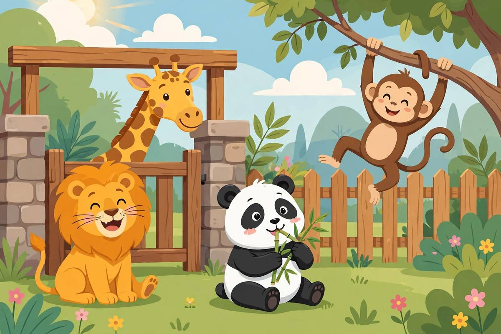

Zoo Jokes for Kids Ages 9 to 12

What do you tell a lion at ten in the morning, a giraffe at lunch, and a very sleepy panda at half past three? On most zoo joke pages, good luck finding out. The biggest collections run past 90 jokes, all sorted animal by animal, so a family standing at an enclosure scrolls a mega-list while the animal wanders off. Some of those lists are not even written for kids: one well known set frames its zoo puns as photo captions for adults and tucks in a painkiller pun, and another includes a panda joke built on punching a polar bear. This page works the other way round. It follows the shape of a real zoo day, one stop at a time, and every joke on it is clean, kind, and safe to say out loud in front of the keepers.
The plan: one joke per stop
A zoo visit is a long, roundabout walking tour, which is exactly why jokes need a plan. Legs get tired, queues happen, and the best laugh of the day usually lands at a bench nobody expected. So each section below belongs to one stop: warm-ups at the gates, big cats while energy is high, elephants and giraffes around the middle, monkeys and pandas after lunch, and the calm reptile house near the end. One more thing worth knowing before the gates open: many modern zoos nurse wounded animals back to health and release them into the wild when they are better, so the animals behind these jokes have real jobs in the world. The jokes stay gentle. The animals are the hosts, never the targets.
At the gates: warm-up jokes while the map unfolds
Gate jokes have one job: start the day before anyone is tired, hungry or lost. Keep them short, keep them loud enough for the whole group, and let the youngest reader tell the first one. A warm-up that lands at the entrance sets the tone for every enclosure after it.
- What did the ticket say at the gate? “Admit one human, plus every joke they are carrying.”
- Why do the zoo gates open slowly in the morning? Even the hinges like a long stretch before a full day of visitors.
- What is the first rule of a zoo day? Tell the first joke before the first enclosure, while everybody is still fresh.
- Why did the backpack carry the joke list? Pockets full of snacks are no place to keep a punchline safe.
Big cats: lions, tigers and cheetahs
Big cats are the classic first stop, and most collections know it: lions and tigers get the first full section in one leading kids collection, ahead of elephants, monkeys and everything else. Cat wordplay runs on manes, roars, stripes and spots. Morning is the moment for these, because by afternoon the whole pride is asleep in the shade and the jokes have to do the roaring for them.
- Why did the lion bring a book to the shade tree? It wanted one quiet chapter between naps, like any sensible cat.
- What do lions call a really tidy mane? A good hair day, worth one small roar at breakfast.
- Why did the cheetah refuse to race the school bus? It only runs for breakfast, never for bragging rights.
- Why did the tiger join the art club? It wanted its stripes in the school exhibition, frame and all.
- What did the lion cub say after its first big roar? “It needs practise, but the pigeons looked impressed.”
Elephants and giraffes: the tall and the huge
Midday belongs to the giants. Elephant jokes lean on trunks, memories and sheer size, and elephants anchor their own section in the big collections for a reason: one animal fills the whole view. Giraffe jokes lean the other way, up. Height, long necks and looking over fences do all the work, and the teller barely has to explain a thing.
- What do you call an elephant carrying a notebook? Prepared. Every joke gets written down before it can wander off.
- What is a giraffe’s favourite view? Over the fence, over the trees, and straight into next week.
- Why did the giraffe duck at the gift shop door? Even tall friends mind the low beams on the way to the postcards.
- What did the elephant say to the garden hose? “Nice trunk. Mine arrived with the rest of me attached.”
- What is an elephant’s favourite dance? The stomp, performed gently and well away from the flower beds.
Monkeys and pandas: the comics of the zoo
After lunch, head for the comedians. Monkey and panda jokes fill whole sections in the big collections, and one leading kids collection groups monkeys, gorillas and pandas into a single section, because all three run on the same fuel: bananas, branches, bamboo and naps. These are the jokes to trade while the animals perform, which at this stop they usually do.
- Why did the monkey bring a ladder to the snack bar? The bananas were on the top shelf, and patience is not a monkey specialty.
- What do you call a panda holding a cookbook? Ready. Bamboo three ways, plus seconds, coming right up.
- Why did the gorilla sit in the middle of the path? It was holding the meeting, and everyone agreed it had earned the best seat.
- What is a monkey’s favourite school subject? Anything with branches. Every lesson leads somewhere climbable.
- Why did the panda pack a pillow for the afternoon? Lunch was generous, the shade was perfect, and a nap was firmly scheduled.
Reptile house cool-down: snakes, frogs and one wise tortoise
Save the reptile house for late in the day. It is quiet, it is shaded, and tired legs recover while the jokes slow down to tortoise speed. Reptiles and frogs get their own named sections in the big animal by animal collections too, but here they get the job they suit best: the cool-down. Tell these ones softly. Half the residents are napping.
- Why did the tortoise win the storytelling contest? Slow start, steady middle, and a finish nobody saw coming.
- What is a frog’s favourite kind of shoe? Open-toad sandals, with room to wiggle.
- Why did the chameleon blush at the art show? Every painting reminded it of an outfit it had already worn.
- What did the crocodile say to the dentist? “See you at my check-up. I brought all of my teeth.”
- What do you call a snake who runs the library? Head of the quiet corner. It has the longest bookmark in the building.
Pick the right joke for the stop
- Long queue at the entrance → a gate warm-up. Short, loud, and finished before the line moves.
- Big cats asleep at noon → the lion and the book. Sleepy animals make gentle jokes funnier, not weaker.
- A sudden rain shower → reptile house jokes, told indoors while the paths dry out.
- A grandparent hearing every joke secondhand → an elephant joke. Size and trunk wordplay need no explaining at all.
- The car ride home → skip the list and play the invent-a-pun game below. The day’s own animals make the best material.
Zoo joke families compared
| Stop | Wordplay engine | Best moment | Watch out for |
|---|---|---|---|
| Gates | Tickets, maps, queues, first things | The first five minutes of the day | Keep it short, the line is moving |
| Big cats | Manes, roars, stripes and naps | Morning, while energy is high | Kind cats only, never a joke about hunting |
| Elephants and giraffes | Trunks, size, height and long necks | The midday bench break | Size jokes stay admiring, never mocking |
| Monkeys and pandas | Bananas, branches, bamboo and naps | Right after lunch | These invite acting out, clear some space |
| Reptile house | Slow, quiet and colour changing | Late day cool-down | Soft voices, half the residents are asleep |
Invent an animal pun before the next enclosure
- Pick the animal in front of you. Not the one from the last stop. Fresh animal, fresh material.
- Find a word that hides in its name or its habits. Mane sounds like main, trunk is also a suitcase, and a panda’s whole afternoon is a nap with snacks. Say the animal’s name slowly and listen for a second word inside it.
- Build the smallest possible scene. One ordinary moment, at the zoo, at school, at breakfast, and let the hidden word deliver the ending. Then tell it before the group reaches the next enclosure, while the animal is still in sight.
What success looks like: somebody else in the group invents the next one without being asked. A zoo day that ends with the whole family making up jokes in the car park has done its job.
, Grace Okafor, Family & Parenting Writer